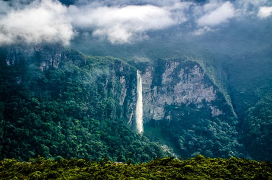

Bioma Amazônico
O Bioma Amazônico chega ocupar uma área de 4.196.943 Km², que corresponde mais de 40% do território nacional nos estados do Acre, Amapá, Amazonas, Pará, Roraima, Rondônia, Mato Grosso, Maranhão e Tocantins. Além do Brasil A Floresta Amazônica perpassa por mais oito países – Peru, Venezuela, Colômbia, Bolívia, Guiana, Suriname, Equador e Guiana Francesa – sendo, portanto, a maior floresta tropical do mundo com um total de 5,5 milhões de km² de extensão.
Relevo

As planícies são constantemente inundadas pela água dos rios. Na
região de planaltos existem algumas serras, como as de Taperapecó,
Imeri e Parima.
Compõem o bioma Amazônia planícies (terrenos com pouca variação de
altitude), depressões (tipo de relevo aplainado, onde são
encontradas colinas baixas) e planaltos (terrenos com superfície
elevada).
Clima

Amazônia é uma região bastante úmida e quente, e isso deve-se à existência das florestas, que, por meio da evapotranspiração, perdem água para o meio ambiente. O Oceano Atlântico também é responsável por essa umidade elevada. O clima predominante é o equatorial úmido, com temperatura média de 27,9 ºC, durante a estação de menor umidade, e de 25,8 ºC, na estação de maior pluviosidade.A umidade do ar chega a 88% na época das chuvas intensas, contudo, mesmo na estação seca, essa permanece elevada, chegando a 77%. Em relação à pluviosidade, chove na Amazônia cerca de 1.500 mm a 3.000 mm todos os anos
Hidrografia
A bacia hidrográfica do Amazonas ultrapassa os sete milhões de km² e
é formada por cerca de 1.100 afluentes. Estende-se por vários países
da América do Sul.
A bacia do Amazonas localiza-se em uma região de planície. Rio
Amazonas percorre uma região bastante plana, com uma média de apenas
dois centímetros de queda por quilômetro, resultando em cerca de
vinte mil quilômetros de percurso navegável, o que foi fundamental
para o desenvolvimento da região amazônica e do país.
Vegetação

A Floresta Amazônica caracteriza-se por ser heterogênea, havendo um
elevado quantitativo de espécies, com cerca de 2500 tipos de árvores
e mais de 30 mil tipos de plantas. Costuma-se classificar essa
floresta conforme a proximidade dos cursos d’água. Dessa forma,
existem três subtipos principais: mata de igapó, mata de várzea e
mata de terra firme.
Mata de igapó: também chamada de floresta alagada, a mata de igapó
caracteriza-se por se localizar muito próxima aos rios, estando
permanentemente inundada. Apresenta plantas de pequeno porte em
comparação ao restante da vegetação da Amazônia e que costumam ser
hidrófilas, ou seja, adaptadas à umidade. Possui, em geral, raízes
elevadas que acompanham os troncos.
Mata de várzea: assim como a mata de igapó, a várzea também sofre
com as inundações, porém apenas no período das cheias dos grandes
rios, por se encontrar em áreas um pouco mais elevadas. É uma mata
muito fechada, com elevada densidade, árvores altas (em média 20m de
altura) e, em geral, com galhos espinhosos, o que dificulta o seu
acesso.
Mata de terra firme: também chamada de caetê, a mata de terra firme
caracteriza-se por se encontrar relativamente distante dos grandes
cursos d’água, localizando-se em planaltos sedimentares. Em razão
disso, não costuma ser alvo de inundações, recobrindo a maior parte
da floresta e apresentando as maiores médias de altura (algumas
árvores chegam a alcançar os 60m).
Devastação
No início do desmatamento da Amazônia, na década de 1970 até o final
da década de 1990, as causas estavam associadas aos projetos de
infraestrutura implantados na região, como a construção de rodovias,
projetos de colonização de algumas áreas, construção de
hidrelétricas e também a expansão da mineração.
A partir dos anos 2000, o desmatamento passou a ter como principais
responsáveis a expansão do agronegócio e o extrativismo vegetal e
mineral, muitas vezes praticados de forma ilegal. A agropecuária
promove o avanço do desmatamento à medida que a cobertura vegetal
das áreas é retirada, a fim de que se torne pasto ou área
agricultável. Além disso, a extração de madeira ilegal, além de
crime, é um dos grandes responsáveis pelo aumento do desmatamento na
Amazônia.
Outras questões, como o crescimento populacional, também são
apontadas como um dos motivos do desmatamento. Novas áreas são
povoadas, fazendo com que seja necessária a derrubada das florestas.
A consequência desse desmatamento, provoca desequilíbrio ecológico,
ao colocar em risco os ecossistemas nela existentes, empobrecendo o
solo e o assoreamento dos rios, além de contribuir para o aumento do
aquecimento global e das mudanças climáticas.